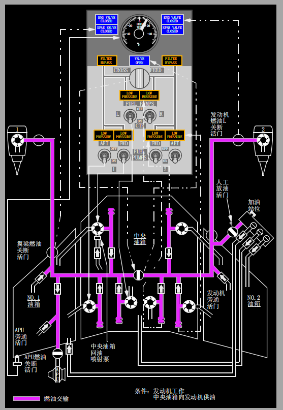

1 发动机活门关闭(ENG VALVE CLOSED)和翼梁活门关闭(SPAR VALVE CLOSED)指示灯
灭 - 相关的发动机或翼梁燃油关断活门打开。
亮（蓝色）-
• 明亮 - 相关的发动机或翼梁燃油关断活门正在过渡中，或活门位置和发动机起动手柄或发动机灭火手柄不一致。
• 暗亮 - 相关的发动机或翼梁燃油活门关闭。
2 燃油温度(TEMP)指示器
指示1号油箱的燃油温度。
3 交输活门打开(VALVE OPEN)指示灯
灭 - 交输活门关闭。
亮（蓝色）-
• 明亮 - 交输活门在过渡中，或活门位置与交输(CROSSFEED)选择器不一致。
• 暗亮 - 交输活门打开。
4 油滤旁通(FILTER BYPASS)指示灯
灭 - 燃油滤工作正常。
亮（琥珀色）- 由于油滤受污染，油滤即将旁通。
5 交输(CROSSFEED)选择器
控制燃油交输活门。
关闭 - 隔离1号和2号发动机的供油管路。
打开 - 接通1号和2号发动机的供油管路。
6 中央油箱燃油泵低压(FUEL PUMP LOW PRESSURE)指示灯
亮 (琥珀色) - 燃油泵输出压力低并且燃油泵(FUEL PUMP)电门在开位。
Note: 两个中央（CTR）油箱燃油泵（FUEL PUMP）电门在开位时，两个低压灯（LOW PRESSURE）指示灯亮会使主警戒（MASTER CAUTION）指示灯和燃油（FUEL）系统信号牌灯亮。一个低压（LOW PRESSURE） 指示灯亮会使主警戒灯再现，主警戒（MASTER CAUTION)指示灯和燃油（FUEL)系统信号牌灯亮。
Note: 当一个中央油箱燃油泵（FUEL PUMP）电门在关（OFF）位时，对面的中央油箱低压（LOW PRESSURE）指示灯亮会使主警戒（MASTER CAUTION)指示灯和燃油（FUEL)系统信号牌灯亮。
熄灭 - 燃油泵输出压力正常或燃油泵（FUEL PUMP)电门在关（OFF)位。
6 (选型不同)中央油箱燃油泵低压(FUEL PUMP LOW PRESSURE)指示灯
亮 (琥珀色) - 燃油泵输出压力低并且燃油泵（FUEL PUMP)电门在（ON）开位。
Note: 两个中央（CTR）油箱燃油泵电门在开（ON）位时，一侧低压（LOW PRESSURE）指示灯持续亮10秒会使主警戒（MASTERCAUTION)指示灯和燃油（FUEL)系统信号牌灯亮。
熄灭 - 燃油泵输出压力正常，或燃油泵（FUEL PUMP)电门在关（OFF)位。
7 燃油泵(FUEL PUMP)电门
开（ON）--打开燃油泵。
关（OFF）--关闭燃油泵。
Note: 中央油箱燃油泵电门置于关（OFF）位时，该泵的自动关断逻辑重置。当中央油箱燃油泵电门在置在关（OFF）位后再置于开（ON）位时，泵将自动再次工作，直到电门置于OFF位或自动关断逻辑使它停止工作。
8 主油箱燃油泵低压(FUEL PUMP LOW PRESSURE)指示灯
亮 (琥珀色) - 燃油泵输出压力低，或燃油泵（FUEL PUMP)电门关（OFF）位。
Note: 同一油箱中的两个低压（LOW PRESSURE)指示灯亮会使主警戒（MASTER CAUTION)指示灯和燃油（FUEL)系统信号牌灯亮。一个低压（LOW PRESSURE)指示灯亮会使主警戒灯再现，主警戒（MASTER CAUTION)和燃油（FUEL)系统信号牌灯亮。
熄灭 - 燃油泵输出压力正常。
1 可工作(OPERATIONAL)指示灯(绿色)
NGS可完全工作。
2 降级(DEGRADED)指示灯(蓝色)
NGS可工作，但处于降级情况。
3 不工作(INOPERATIVE)指示灯(琥珀色)
NGS不工作。
Note: 指示灯都不亮，也表明NGS不工作。
介绍
燃油系统向发动机和APU供油。燃油存储在位于机翼内和机翼中段的三个油箱中。
燃油供给
通常由中央油箱压供油至两台发动机，直到中央油箱油量减少到接近零。然后再由各自的主油箱为两台发动机提供压力供油。单向活门分布在整个燃油系统中，以确保燃油流动方向正确并防止燃油在油箱之间传输。
燃油泵
每个燃油箱使用两个由交流电驱动的燃油泵，通过流经泵的燃油为泵提供冷却和润滑。中央油箱燃油泵产生的压力大于主油箱。这样即使所有燃油泵都在工作，都可确保先使用中央油箱燃油，再使用主油箱燃油。各自的压力传感器监控每个泵的输出压力。
当燃油泵传感器探测到输出压力低时，在短暂的延迟之后，中央油箱各燃油泵会自动关闭。
Note: 油箱油量低且飞机在爬升、下降或在地面机头下俯姿态时，燃油泵低压（LOW PRESSURE）指示灯可能闪亮。
Note: 油箱油量低且飞机巡航时，中央油箱燃油泵低压灯可能闪亮。由于飞机姿态和/或泵进气口位置之间的细微差别，一个泵可能比另一个更快地指示低压。中央油箱燃油量读数为零后可能出现低压指示。相关中央油箱燃油泵的燃油系统信号灯和主警戒指示灯亮之前，低压灯可以持续闪烁5分钟。

虹吸供油
主油箱燃油泵压力低时，每台发动机都可通过旁通燃油泵的虹吸供油管从相应的主油箱中吸油。随着飞机爬升，由于气压降低，液化气体从油箱中释放出来。这些气体可能在虹吸供油管中积聚并限制燃油流动。在高高度，可能由于燃油流量减少而导致推力衰减或发动机熄火。
到达巡航高度后，燃油箱中的液化气体最终会被耗尽。耗尽时间取决于飞机高度、燃油温度和燃油类型。一旦液化气体被耗尽，发动机便可在巡航功率下虹吸供油操作。
主油箱旁通活门也可用以虹吸放油。
燃油交输
发动机燃油总管使用交输活门来互相联接。该活门由电瓶汇流条供电的DC马达驱动。
打开燃油交输活门，即可从一个主油箱中通过工作的燃油泵向两台发动机提供燃油压力。连续使用交输供油会逐渐导致燃油不平衡。
中央油箱回油喷射泵
主油箱燃油泵1号前（FWD）电门处于ON位时，中央油箱回油喷射泵自动将中央油箱的剩余燃油传输到1号主油箱中。当1号主油箱的油量约为总油量的一半时，开始燃油传输。回油过程一旦开始，将在剩余的飞行中持续进行。
燃油温度
燃油控制面板上的燃油温度（FUEL TEMP）指示器显示燃油温度。1号主油箱中的传感器可监控燃油温度。该温度指示系统使用AC电源。
APU燃油供给
当AC燃油泵工作时，由左侧燃油总管向APU供油。如果AC燃油泵不工作，由1号主油箱虹吸供油。
燃油量指示
燃油量指示系统计算每个油箱中的可用燃油。每个油箱中的燃油量显示在上部显示组件和加油面板上。
加油/放油/地面传输
可在右机翼单点压力加油站位进行快速加油和放油。加油站位也可用作油箱之间的燃油地面传输。
人工放油活门位于2号发动机外侧，连接发动机供油系统和加油站位。该站位在放油和油箱间的传输燃油时打开。
加油过程中当油箱满时，使用关断系统自动关闭每个燃油箱中的加油活门。
燃油油箱位置和容量（可用燃油）
1号和2号主油箱与机翼构成一体。中央油箱位于翼根之间的机身区域内，并向外延伸到机翼结构上。
这些数字代表大致的可用燃油量。有关的重量、平衡控制和载重手册给出了所有条件下的确切数据。
| 油箱 | NO.1 | NO.2 | 中央油箱 | 总油量 |
| 公斤 | 3,915 | 3,915 | 13,066 | 20,896 |
氮生成系统(NGS)
在所有飞行阶段，NGS将引气转换为换成富氮气体（NEA）。NEA被输送至中央油箱以降低油箱可燃性。机组看不到NGS的工作；它不需要机组对系统进行任何操作，也没有任何驾驶舱指示。起飞后NGS自动开始工作，并在整个爬升、巡航、下降、着陆过程，及滑行的一小段时间内持续运行。一段特定时间后，或不再有引气压力时，NGS关闭。在下述非正常飞行条件下，NGS也会自动关断：
• 飞机在地面且未处于测试方式
• 空中任一发动机不工作
• 货舱或主舱区域探测到火警或烟雾
• 左空调组件过热
• 中央油箱加油活门打开
主要通过隔绝点火源来保护油箱，因此在MEL程序中，可以在NGS不工作时放行飞机。
NGS有一个操作性能指示器在主轮舱内，与APU火警控制面板相邻。